Creating a New Apache Apex Project with your IDE
We describe the process for creating a new Apache Apex project for three common IDEs: IntelliJ IDEA, Eclipse and NetBeans
IntelliJ IDEA
The IntelliJ IDEA is available at https://www.jetbrains.com/idea/.
First make sure you have the Maven Integration plugin enabled in the list at File ⇨ Settings ⇨ Plugins.
Now, select File ⇨ New ⇨ Project. Choose Maven in the left pane
and check Create from archetype in the dialog box; at this point, you should be
able to expand the org.apache.apex:apex-app-archetype element in the center pane and
select a suitable version as shown below:
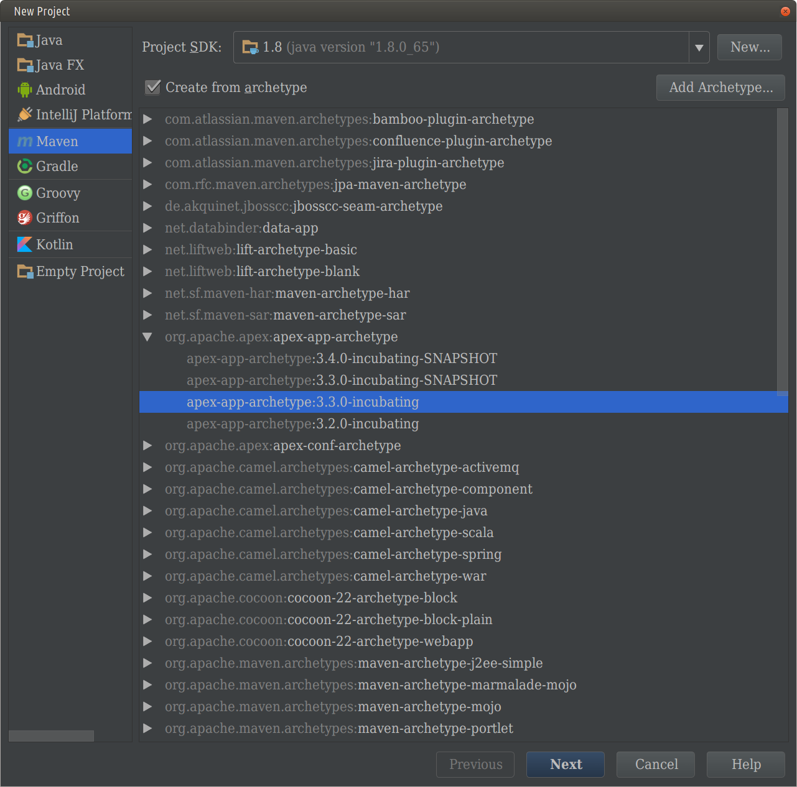
If the org.apache.apex:apex-app-archetype element in not present in the center pane,
you can click the Add Archetype... button and fill out the Group ID, Artifact ID,
and Version entries, (leave Repository blank), as shown below:
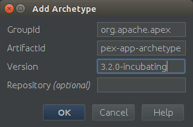
| Field | Value |
|---|---|
| Group ID | org.apache.apex |
| Artifact ID | apex-app-archetype |
| Version | 3.2.0-incubating (or any later version) |
Click OK. The archetype will appear in the list, selected. Note that this
Add Archetype... step is only required the first time you use the archetype; thereafter,
you can select the archetype directly.
Click Next, and fill out the rest of the required information. For example:
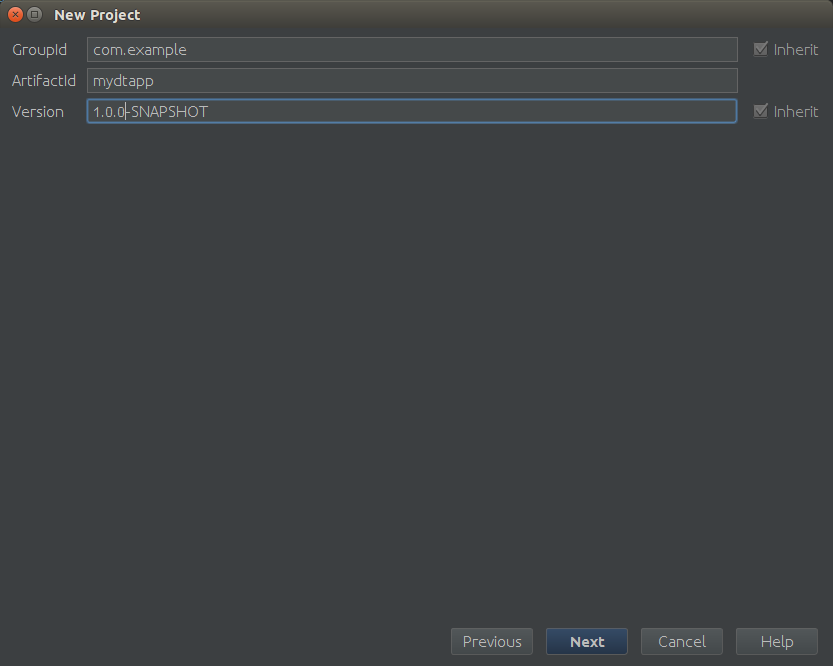
Click Next, and verify the information shown on the next screen (if you have a more
recent version of Maven installed, enter its home directory):
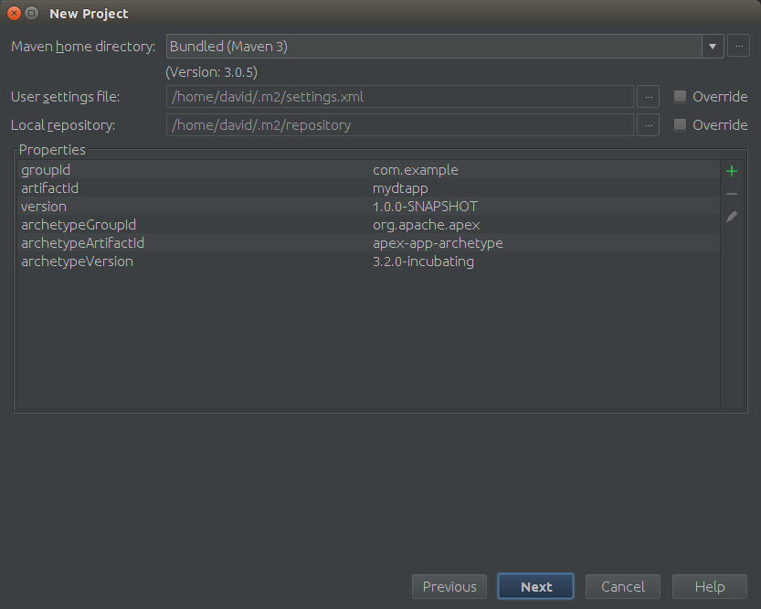
Click Next, and fill out the project name and location:
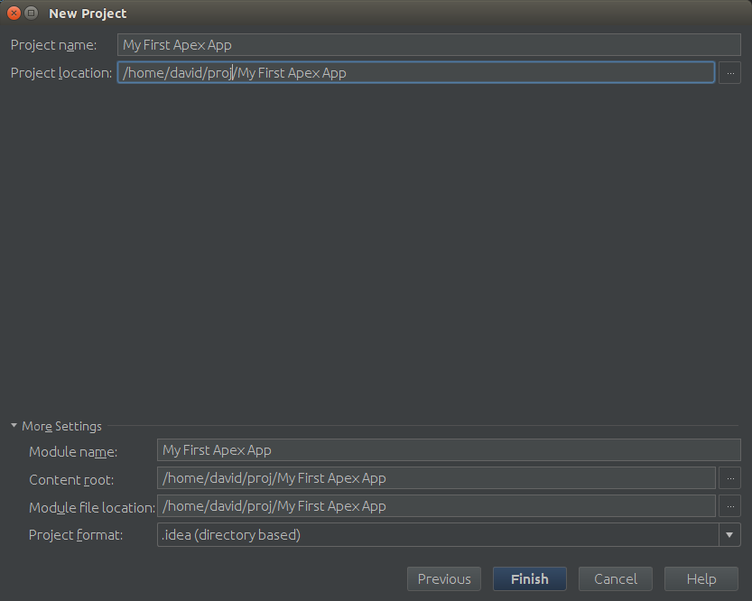
Click Finish, and now you have created your own Apache Apex App Package
project, with a default unit test. You can run the unit test, make code
changes or make dependency changes within the IDEA.
Eclipse
The Eclipse IDE is downloadable from https://eclipse.org/downloads/.
Generate a new Maven archetype project as follows:
- Open Eclipse.
- Select File ⇨ New ⇨ Project... ⇨ Maven ⇨ Maven Project and click Next. 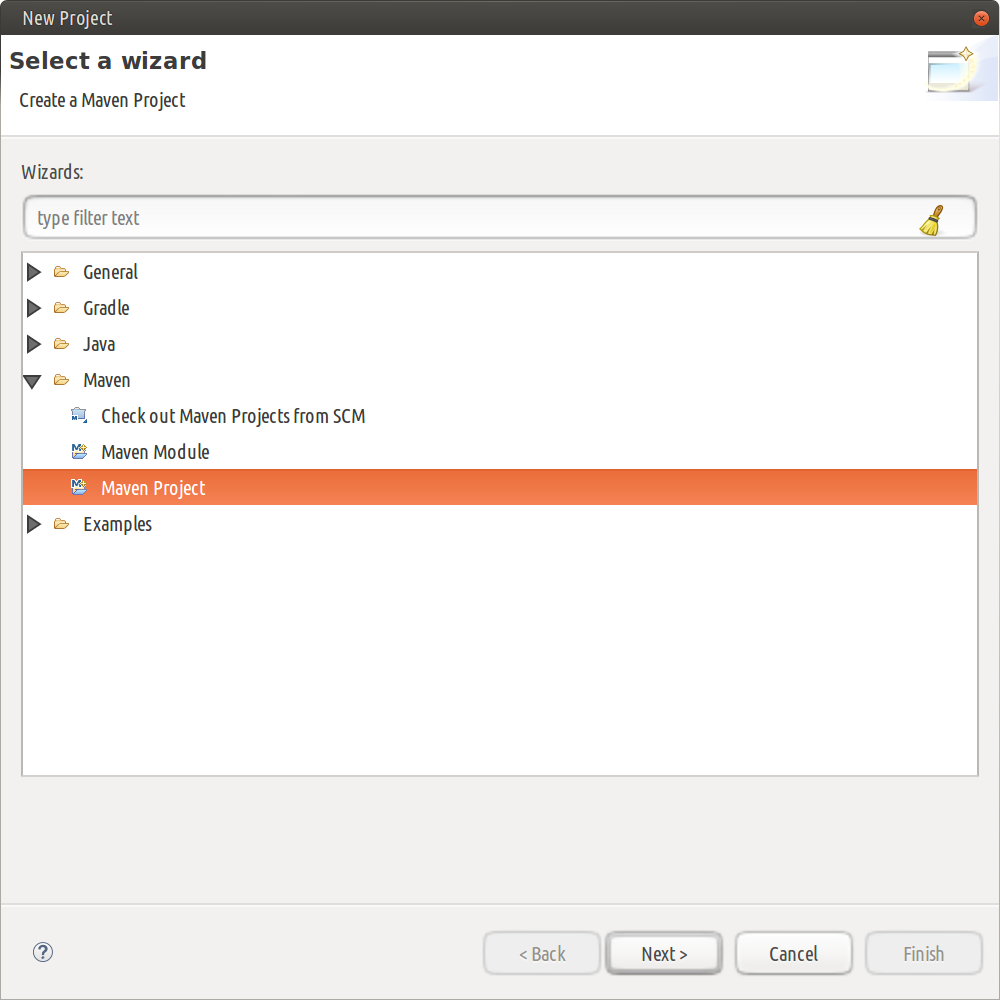
- Click Next on the next dialog as well; you should now see a window where you can configure archetype catalogs: 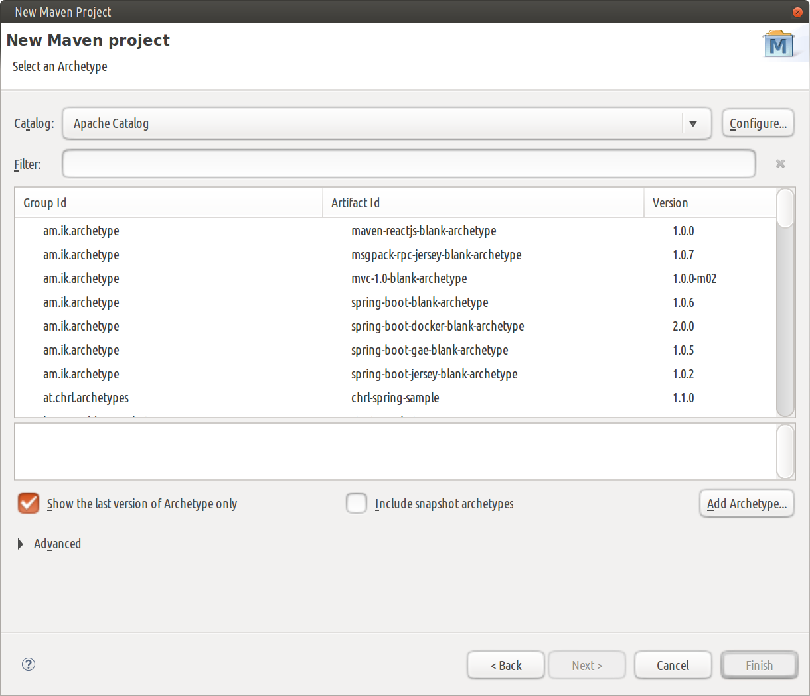
- From the Catalog dropdown select a suitable remote catalog if one is present
and enter
apexin the Filter input box; you should see one or more entries in the center pane with Group Id oforg.apache.apexand an Artifact Id ofapex-app-archetype: 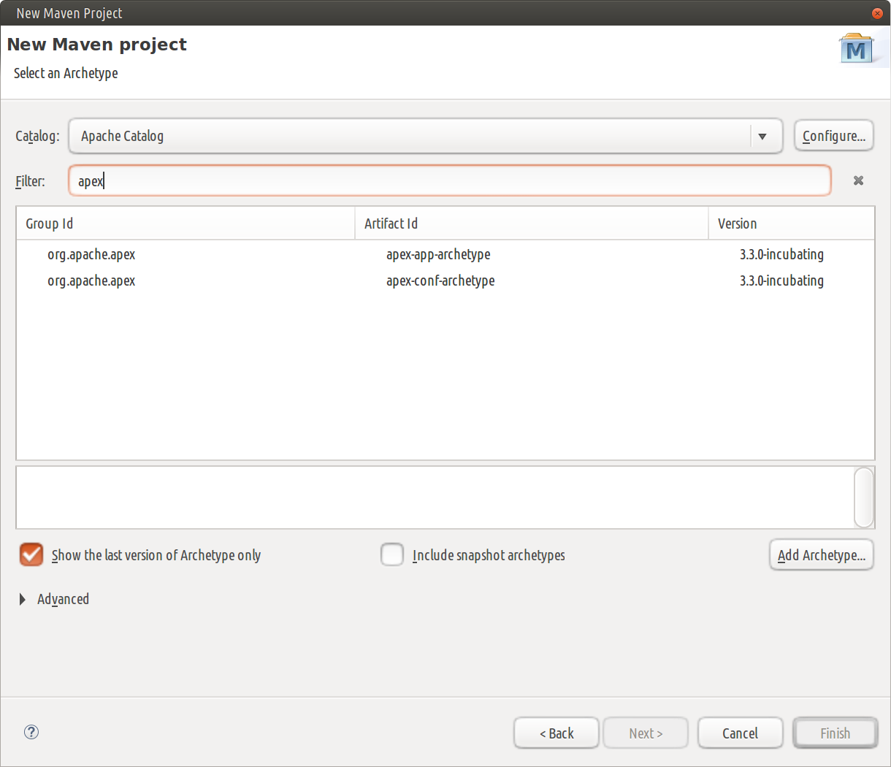 - If a suitable remote catalog is not present, you'll need to add it by clicking the Configure button to see a new dialog that shows a list of catalogs in the middle pane and a Add Remote Catalog button on the right: 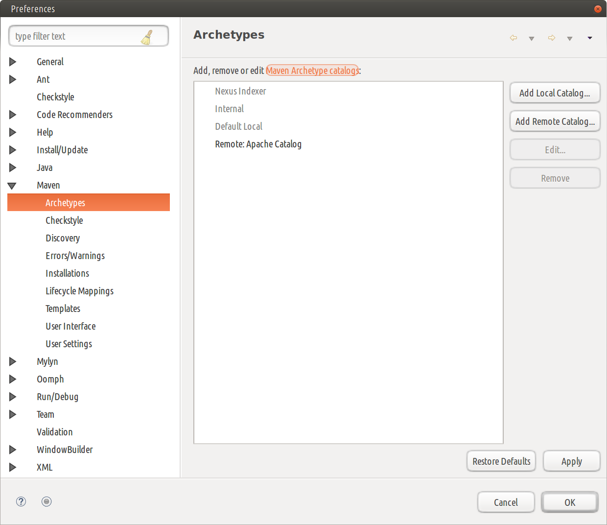
- Click that button to get a dialog where you can enter details of a new
catalog and enter
http://repo.maven.apache.org/maven2/archetype-catalog.xmlfor the Catalog File entry and suitable text (such asApache Catalog) for the Description entry: 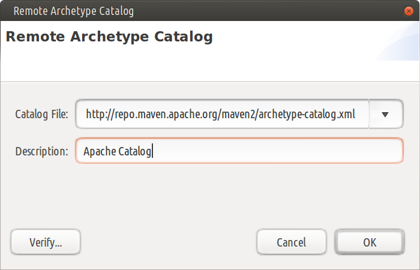 - In either case, you should now be able to select the
apex-app-archetypeentry, click Next to see a window where you can enter details of the new project and enter values similar to those in the table below (you'll need to replace the default value${archetypeVersion}of archetypeVersion with a suitable concrete version number like3.3.0-incubating): 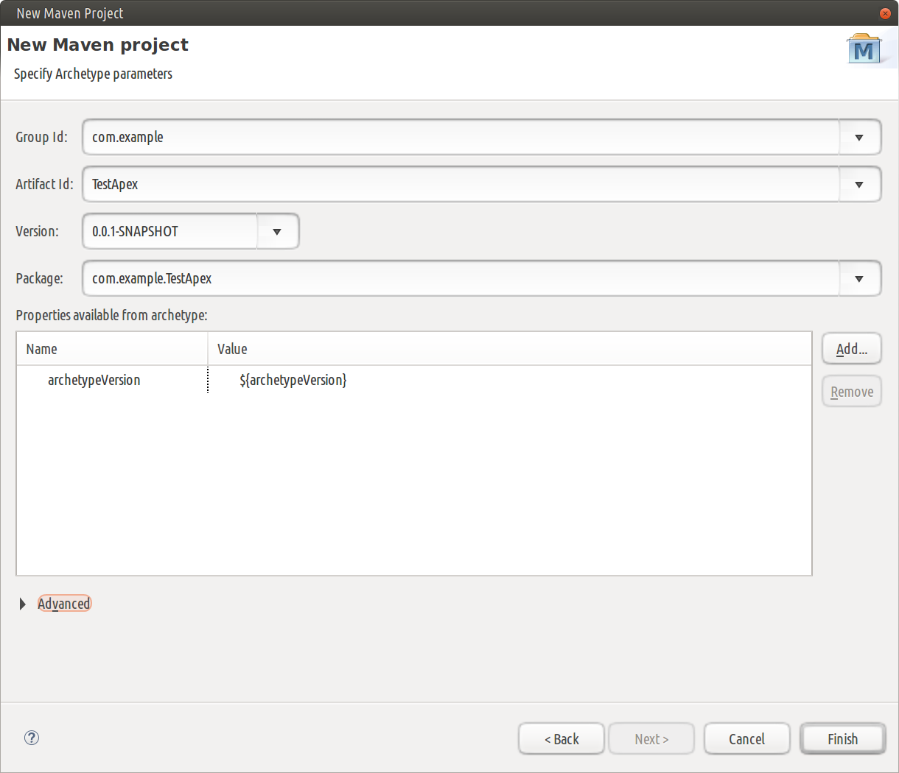
Field |
Value |
Group ID |
com.example |
Artifact ID |
TestApex |
Version |
0.0.1-SNAPSHOT |
Package |
com.example.TestApex |
archetypeVersion |
3.3.0-incubating |
- Click Finish; you should see the new project in your Package Explorer
NetBeans
The NetBeans IDE is downloadable from https://netbeans.org/downloads/.
Generate a new Maven archetype project as follows:
- Open NetBeans.
- Click File ⇨ New Project.
-
From the Categories column select Maven and from the Projects column, select Project from Archetype, and click Next. 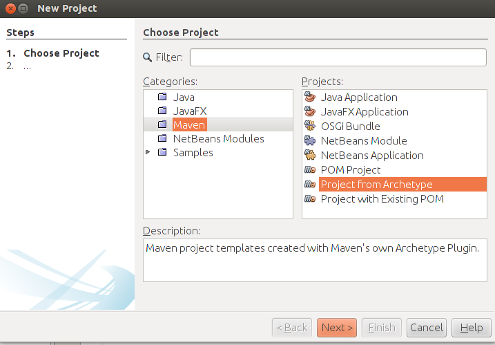
-
On the Maven Archetype window, type
apexin the Search box, and from the list of Known Archetypes, selectapex-app-archetype. 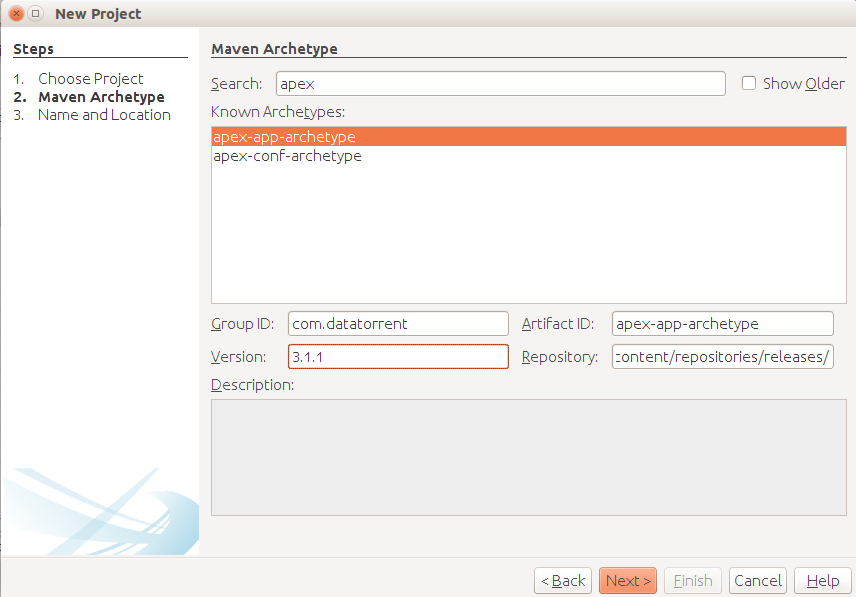 - Make sure that the values for the fields match the values shown in this table (except that the archetype version may be more recent):
Field |
Value |
Group ID |
org.apache.apex |
Artifact ID |
apex-app-archetype |
Version |
3.3.0-incubating |
Repository |
/maven/content/repositories/releases |
- Click Next.
-
On the Name and Location window, do the following:
- Enter a name for this project in the Project Name box, for example,
TestApex. - Enter a location for this project in the Project Location box, for
example,
/home/dtadmin/NetBeansProjects. - Enter an ID in the Group Id box, for example,
com.example. - Enter a version for this project in the Version box, for example,
1.0-SNAPSHOT. - Enter the package name in the Package box, for example,
com.example.testapex.
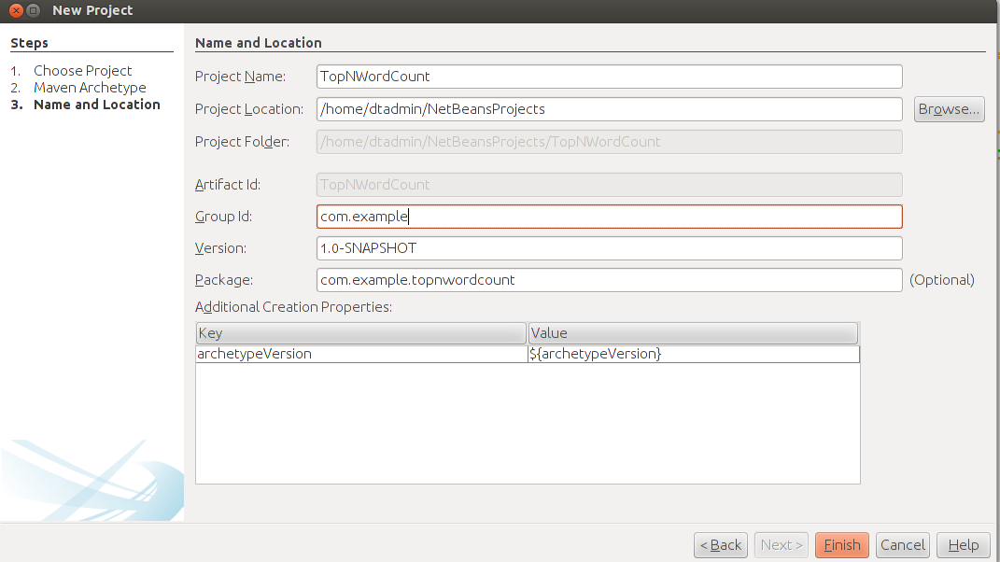
- Enter a name for this project in the Project Name box, for example,
-
Click Finish.
The project is generated at the specified location and should be visible in the left panel with the name My Apex Application. You can right-click the project and choose Rename to provide a more descriptive name if you wish.